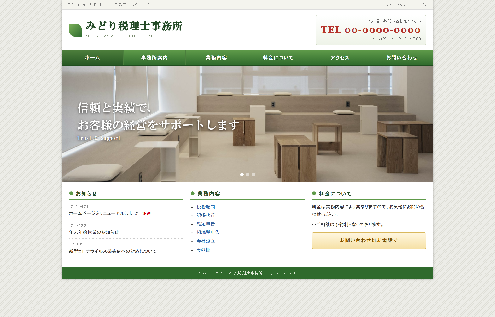
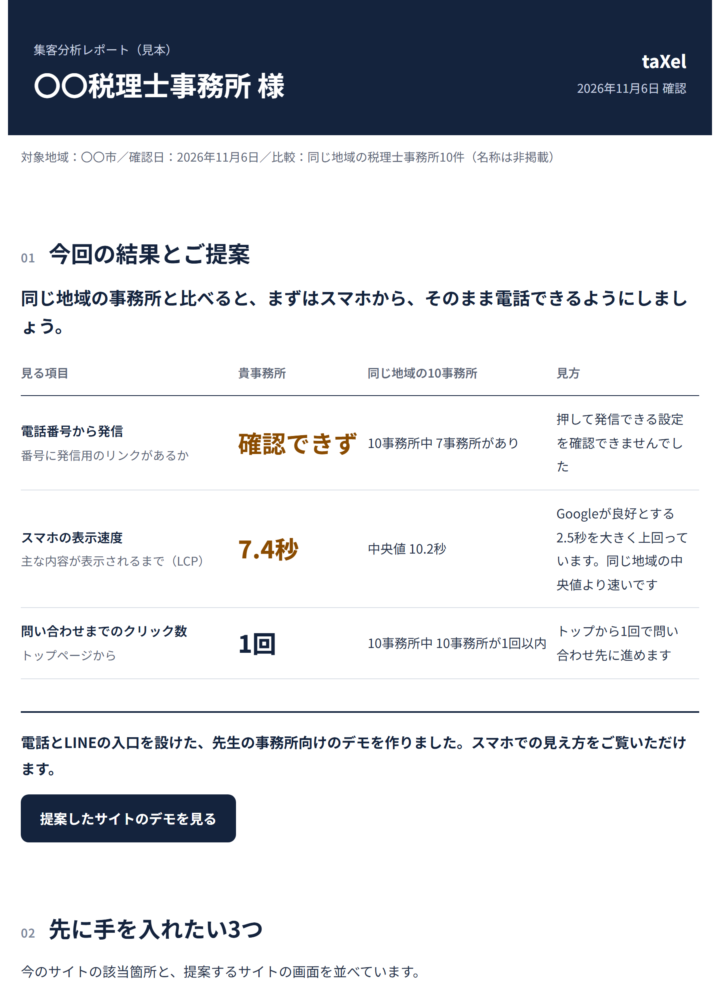
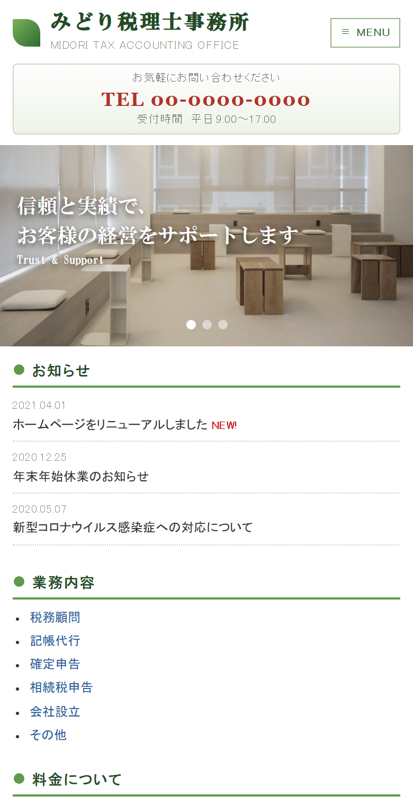
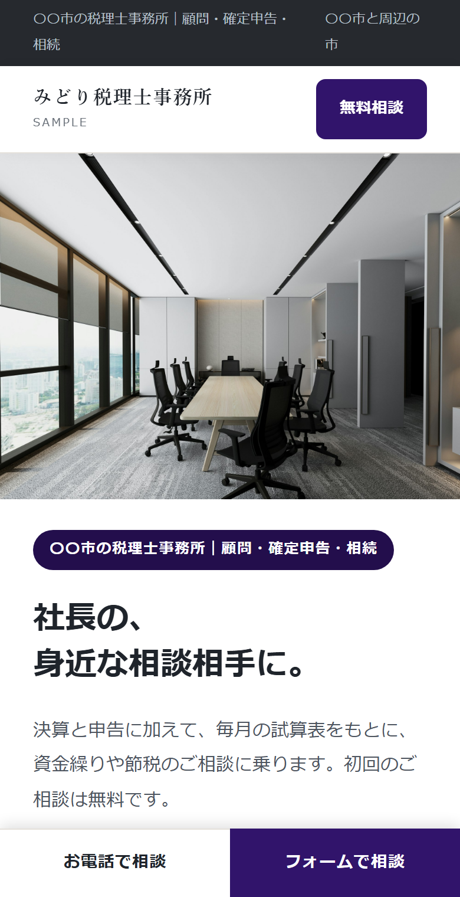

税理士事務所の集客改善サービス
サイト・Googleマップ・公式LINE・メールの運用を、月額でお引き受けします。
通常 月19,800円〜・初期費用100,000円 → 2026年11月30日までのお申し込みで、初年度（契約から12か月）月10,000円・初期費用0円（税別）

改修前税理士事務所向け｜Web集客運用代行
ホームページがあるだけで、集客できていると思っていませんか？ 地域検索で見つからない。訪問されても問い合わせにつながらない。更新する時間もない。そんな取りこぼしを減らすために、サイト・Googleマップ・LINE・記事更新をまとめてお引き受けします。
通常 月19,800円〜・初期費用100,000円 → 2026年11月30日までのお申し込みで、初年度（契約から12か月）月10,000円・初期費用0円（税別）
税理士事務所向け｜Web集客運用代行
紹介だけに頼らない集客の仕組みを。サイト改善・地域検索対策・Googleマップ・LINE・記事更新まで、仕組みづくりと日々の運用をまとめてお任せいただけます。
通常 月19,800円〜・初期費用100,000円 → 2026年11月30日までのお申し込みで、初年度（契約から12か月）月10,000円・初期費用0円（税別）
税理士事務所向け｜Web集客運用代行
税理士事務所のWeb集客を、まとめて。制作して終わりにせず、集客の運用までお任せいただけます。
2026年11月30日までのお申し込み
通常 月19,800円〜・初期費用100,000円
月10,000円（税別・初年度）
初期費用 0円
LINEを使わずに、オンライン説明（15分）を予約する最低利用6か月・13か月目から月19,800円〜
税理士事務所向け｜Web集客運用代行
同じ地域の事務所と比べ、検索・Googleマップ・サイトから問い合わせまでの流れを分析します。改善から毎月の運用までお任せいただけます。
LINEを使わずに、オンライン説明（15分）を予約する通常 月19,800円〜・初期費用100,000円 → 2026年11月30日までのお申し込みで、初年度（契約から12か月）月10,000円・初期費用0円（税別）

同じ地域の事務所と比べ、検索・マップ・サイト・問い合わせの流れを確認。先に直したい3点と改善策をお伝えします。
サイトのURLと、LINEでの3つの質問への回答です。
診断だけで契約にはなりません。診断後のご説明は、ご希望の方だけに行います。
LINEを使わずに、オンライン説明（15分）を予約する診断レポートの見本 数値は実際の診断結果。事務所名と画面は差し替えています
指摘の例
日々の仕事を思い浮かべて、お答えください。
社長が知りたい順に、検索から面談予約までの案内を整えます。
〇〇市 税理士
探す
「地域名 税理士」で検索。検索結果やGoogleマップから候補を探します。
taXelが行うこと
対応地域と業務別のページを整え、記事を週1本公開します。
比べる
マップで場所や口コミを確認。サイトで料金や相談の進め方を比べます。
taXelが行うこと
Googleマップの情報・写真を整え、サイトに料金の目安と相談の流れを載せます。
相談先、迷っていませんか？
LINELINEで質問する聞く
サイトを閉じそうな社長にもLINEを案内。電話やフォームをためらう方も気軽に質問できます。
taXelが行うこと
サイトを離れる前のLINE案内と、悩み別の質問から予約までの流れを作ります。税務の回答は事務所です。
面談のご予約
事前のご質問：顧問料の目安
相談する
面談前の質問が分かれば、事務所も相談内容を踏まえて話を始められます。
taXelが行うこと
予約までの案内を整え、事前に伺った内容を事務所へ引き継ぎます。
役立つ情報で顧問先の満足を高め、長いお付き合いと、知り合いの経営者のご紹介につながることを目指します。
決算の準備、業種・規模に合う補助金・助成金、税制改正、事務所からの提案を届けます。
顧問先の決算月や業種などを登録し、内容に合わせて送る相手を絞ります。
taXelが原稿を作り、事務所の確認後、事務所名で配信。開封などの反応を毎月報告します。
顧問先情報は事務所名義で管理し、解約時に削除します。
顧問先への配信（見本）
事務所の特徴・業務・相談方法が伝わるよう、内容や構成を変えます。
地域や得意分野に合う原稿をtaXelが作成し、事務所の承認後に週1本公開します。
基本情報と写真を管理します。オーナー確認は事務所にお願いします。
事務所名義で開設いただく公式LINEに、相談前の案内と自動メッセージを設定します。
メールは月1通の予定です。原稿作成から承認後の配信まで担い、毎月の作業と状況を報告します。
確定申告・年末調整・決算期に合わせ、相談する方が知りたい内容を記事にします。
創業・相続・法人化など、受けたい相談に合わせてページとLINEの案内を作ります。
顧問先に伝えたい税制改正や手続きの期限を原稿にし、事務所の確認後に配信します。
サイトの改修例から毎月の報告まで、見本をご覧ください。
架空のみどり税理士事務所の改修例です。古いサイトの課題と変更点を、下の表で比べられます。
サイトの見本 架空の事務所による制作例です


| 見るところ | 改修前の課題 | 改修後の変更点 |
|---|---|---|
| 何の事務所か | 「信頼と実績で経営をサポート」だけで、地域も具体的な業務も分からない | 見出し上に地域と業務を記載。毎月の試算表で資金繰り・節税を相談できると明記 |
| スマホ | スマホ表示はあるが文字が小さく、相談方法はメニューの奥 | 文字を読みやすくし、電話と相談のボタンを画面の下に固定 |
| 電話 | 番号を押しても発信できず、書き写す必要がある | 電話番号を押すと、そのまま発信できる |
| 相談の入口 | 電話のみ。受付は平日9時〜17時 | 「無料相談」ボタンと公式LINEで、時間外も相談を受け付ける |
| 料金 | 「お問い合わせください」だけで、料金の目安がない | 料金の目安と報酬の計算方法を載せる |
| 更新 | お知らせが2021年で止まり、今も営業しているか不安 | 毎月の運用で、解説記事やお知らせを追加する |
しばらく読んで迷っている方や、閉じようとした方にLINEを案内します。友だち登録後は、悩み別の質問から面談予約へ進めます。下は節税の状況を確かめたい社長の例です。
LINEの見本 架空の事務所による例です
11/10(月)
友だち追加ありがとうございます。いくつかの質問で、ご相談に合う案内をお届けします。
10:02Q1 事業の形は？
10:02法人
Q2 年間の売上は？
10:023,000万〜1億円
Q3 一番相談したいことは？
10:03節税できているか確かめたい
Q4 去年の利益（所得）は？
10:03500万〜1,000万円未満
Q5 使っている制度は？（複数可）
10:04小規模企業共済
1/3 状況のまとめ
利益 500万〜1,000万円未満、使用中の制度は小規模企業共済のみ
2/3 回答から分かること
まだ使っていない可能性のある制度・取り組み
制度ごとに加入条件があり、税負担への影響も異なります。使えるかどうかは、決算書を見ながら一度お話ししましょう。
3/3 面談で確認すること
今年の利益の見込みと、手元に残したい資金を一緒に確認します。
無料面談を予約する訪問数・検索語・LINEの友だち数・問い合わせ数と翌月の作業を毎月報告します。数値は架空です。
月次報告の書式見本 数値と内容は架空です
みどり税理士事務所 様
集客の月次報告 2026年10月分
taXel
前月より +38
前月より +2
前月より +9
前月より +140
よく検索された言葉
今月行ったこと
来月行うこと
今月の数字から分かったこと
問い合わせ5件のうち3件は相続のご相談で、どれも相続の記事を読んだ後でした。一方、相続相談のページで面談の前に何を用意すればよいかが分からず、LINEで同じ質問が2件ありました。
来月の作業の理由
相談前の不明点を減らすため、相続相談のページに必要書類と面談の流れを足します。確定申告の記事は、申告の時期より前に読まれるよう12月中に公開します。
最初の情報確認は約2時間。その後は毎月1回、原稿をまとめてご確認いただきます。
| 項目 | taXel | 事務所 |
|---|---|---|
| 開始時の情報確認 | 事務所情報・対応業務・得意分野を伺い、掲載内容を作ります。 | 情報の共有と内容の確認をお願いします。目安は約2時間です。 |
| 記事・お知らせの制作 | 記事や配信原稿を作り、毎月1回まとめてお送りします。 | 原稿の修正点と、公開・配信の可否をお知らせください。 |
| 個別の税務質問 | 自動案内と、事務所への連絡方法を設定します。 | 相談者からの個別の税務質問にご回答ください。 |
| アカウントの準備 | Googleマップと公式LINEの設定・管理の手順をご案内します。 | Googleマップのオーナー確認と、事務所名義でのLINE開設をお願いします。 |
| 公開・配信と毎月の報告 | 承認後に公開・配信し、毎月の作業と状況をご報告します。 | 報告を確認し、業務や対応方針に変更があればお知らせください。 |
公開・配信前に必ず事務所の確認を受けます。ドメイン・LINEアカウント・Googleマップは事務所名義です。
代表 平澤 建（ひらさわ たける）の経歴
2026年11月30日までのお申し込み
月10,000円税別・初年度
初期費用 0円
最低利用6か月・13か月目から月19,800円〜
通常価格
月19,800円〜税別
初期費用 100,000円
見込み客向けのLINEは、LINEの無料プランで運用します。顧問先との連絡にもLINEを使う場合は別のプランで、月24,800円に加え、LINEのライトプラン利用料5,000円を事務所からLINEへ直接お支払いいただきます。範囲外の制作は別途お見積もりです。検索順位や問い合わせ数は保証しておりません。
| 含むもの | 含まないもの |
|---|---|
| サイトの制作・改修、SEOの初期設定、記事を週1本 | 取材を伴う記事、専門ライターによる個別の執筆、オリジナルデザイン、大きな機能の追加 |
| Googleマップの情報の修正、外部サイトの住所表記の整理 | 検索順位の保証、Googleマップ以外の広告運用 |
| 見込み客向け公式LINEの設定と案内、顧問先へのメール配信 | 相談者からの個別の質問への回答（事務所にお願いします） |
| 毎月の分析とご報告、次の月の提案 | 事務所に伺っての運用支援 |
含まない作業をご希望の場合は、金額をお伝えし、了承をいただいてから始めます。
taXelが作り直して運用するサイトは、解約時に公開を終了します。他社へ移す場合は、有料で移管用のデータをお渡しします（金額は契約前にお伝えします）。今のサイトを直した場合は、事務所のサイトとしてそのまま残ります。ドメイン・公式LINE・Googleマップは事務所に残ります。
今のサイトを直すことも、taXelが作り直すこともできます。サイトと管理方法を確認し、事務所に合う方法をご提案します。範囲外の制作は別途お見積もりします。
毎月1回、原稿をまとめてご確認いただきます。公開・配信は必ず承認後に行います。
順位や問い合わせ数の増加は保証しません。記事公開や各媒体の管理を続け、毎月の作業と状況を報告します。
taXelはLINEの設定と自動案内を担当します。個別の税務質問への回答は事務所にお願いします。
ドメイン・LINEアカウント・Googleマップは事務所名義です。解約後も事務所に残ります。
最低利用期間の6か月を過ぎると解約できます。解約時はLINE運用を終了し、作業データとお預かりした顧客データを削除します。taXelが作り直して運用するサイトは公開を終了し、他社へ移す場合は有料で移管用のデータをお渡しします（金額は契約前にお伝えします）。今のサイトを直した場合は、事務所のサイトとしてそのまま残ります。配信文面の控えは削除前にお渡しします。ドメイン・LINEアカウント・Googleマップは事務所に残ります。
見込み客向けのLINEは無料プランで運用するため、LINEへの支払いはありません。顧問先への連絡にもLINEを使う場合は別のプランで、月24,800円に加え、LINEのライトプラン利用料5,000円を事務所からLINEへ直接お支払いいただきます。範囲外の制作は別途お見積もりします。
サイト、Googleマップ、問い合わせまでの手順を確認します。公式LINEで3つの質問への回答とURLをお送りください。診断後のご説明は、ご希望の方だけに行います。
LINEを使わずに、オンライン説明（15分）を予約する通常 月19,800円〜・初期費用100,000円 → 2026年11月30日までのお申し込みで、初年度（契約から12か月）月10,000円・初期費用0円（税別）